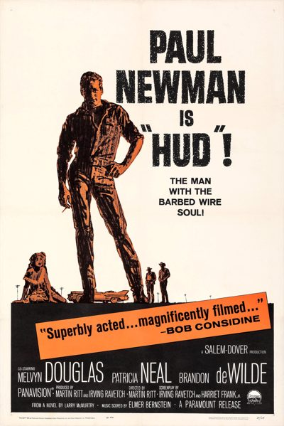

Hud

Starring: Paul Newman, Melvyn Douglas, Patricia Neal
Director: Martin Ritt
Writer: Harriet Frank Jr., Irving Ravetch
Producer: Irving Ravetch
Hud is a 1963 American contemporary Western film directed and produced by Martin Ritt, and starring Paul Newman, Melvyn Douglas, Brandon deWilde, and Patricia Neal. It was produced by Ritt and Newman's recently founded company, Salem Productions, and was their first film for Paramount Pictures.
Trivia
- Won the Academy Award for Best Supporting Actor.
- Won the Academy Award for Best Actress.
- Won the Academy Award for Best Cinematography, Black-and-White.
- Selected for the National Board of Review: Top Ten Films.
- Also nominated for: Academy Award for Best Actor; Academy Award for Best Director; Academy Award for Best Writing, Adapted Screenplay; Academy Award for Best Art Direction, Black and White.
- Based on Horseman, Pass By (novel by Larry McMurtry).
- After working together on other projects, director Martin Ritt and Paul Newman co-founded Salem Productions and the company made a three-film deal with Paramount Studios.
- For its first film, Salem hired husband-and-wife scriptwriters Irving Ravetch and Harriet Frank Jr., who had worked with Ritt and Newman on The Long, Hot Summer.
- Ravetch found Larry McMurtry's novel, Horseman, Pass By, in an airport shop during a Dallas stopover and presented the project to Ritt and Newman after reading a description of Hud Bannon.
Filming Locations
- Texas
- Outdoor scenes were filmed at the Goodnight Ranch.
- The rest of the scenes were shot at the Paramount sound stages in Hollywood beginning in the first week of July.
Previous Showings
1 Run • 1 Festival
All runs on record (1):
- November 12 - 14, 2004Marlon Brando: His First Decade in Films, plus Nine Musicals with Fred Astaire and Ginger Rogersw/ One-Eyed Jacks